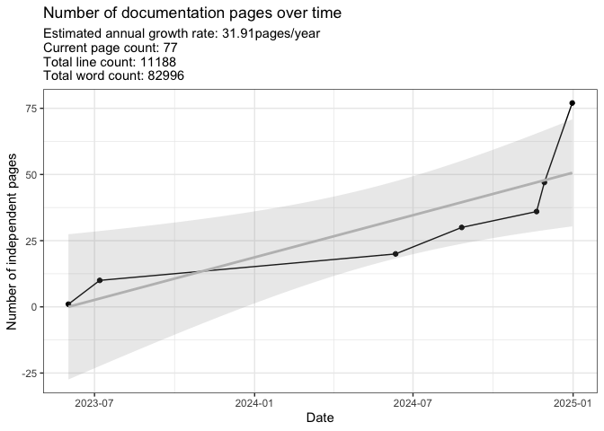
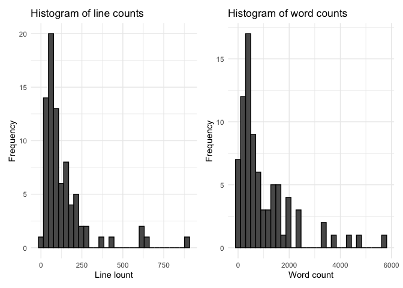

Documentation log count
Last update:
## [1] "2025-01-08"
This doc was built with: rmarkdown::render("documentation_log.Rmd", output_file = "../pages/documentation_log.md")
Below is the latest count of documentation pages. This figure is updated sporadically to track the current page count and estimated growth rate. This count only considers the main sources in ./pages but ignores other code pages, images, etc.

## Regression Summary:
##
## Call:
## lm(formula = FileCount ~ DateNumeric, data = df)
##
## Residuals:
## 1 2 3 4 5 6 7
## 0.9994 6.8523 -12.8702 -9.5141 -11.0321 -0.8189 26.3837
##
## Coefficients:
## Estimate Std. Error t value Pr(>|t|)
## (Intercept) -1.705e+03 4.977e+02 -3.427 0.0187 *
## DateNumeric 8.742e-02 2.505e-02 3.490 0.0175 *
## ---
## Signif. codes: 0 '***' 0.001 '**' 0.01 '*' 0.05 '.' 0.1 ' ' 1
##
## Residual standard error: 14.98 on 5 degrees of freedom
## Multiple R-squared: 0.709, Adjusted R-squared: 0.6508
## F-statistic: 12.18 on 1 and 5 DF, p-value: 0.01746
## Estimated Annual Growth Rate (pages/year): 31.91
## Current count: 77

Change log
See generate_gitlog.sh for usage.
(current year log may not be up-to-date)
2025
Wed Jan 8 10:28:21 2025 +0100 - DylanLawless: pca gwas tutorial link
Wed Jan 8 10:14:38 2025 +0100 - DylanLawless: multiblock data fusion methods
Tue Jan 7 14:51:50 2025 +0100 - DylanLawless: PCA RNA de examples and reading
Tue Jan 7 14:34:03 2025 +0100 - DylanLawless: poplation structure
Tue Jan 7 13:37:20 2025 +0100 - DylanLawless: pca king ibd
Mon Jan 6 18:19:10 2025 +0100 - DylanLawless: pca features
Thu Jan 2 14:12:02 2025 +0100 - DylanLawless: release docs
Thu Jan 2 10:49:11 2025 +0100 - DylanLawless: causal inference stats
Git log for 2025 contains 7 entries and is saved to gitlog_2025.txt
2024
Fri Dec 20 16:34:53 2024 +0100 - DylanLawless: pca page
Fri Dec 20 00:03:46 2024 +0100 - DylanLawless: metrics
Wed Dec 18 17:07:52 2024 +0100 - DylanLawless: slurm notes
Tue Dec 17 15:36:35 2024 +0100 - DylanLawless: design docs naviation and content linked
Tue Dec 17 13:07:00 2024 +0100 - DylanLawless: metrics pages
Mon Dec 16 15:53:57 2024 +0100 - DylanLawless: qv page
Mon Dec 16 10:07:32 2024 +0100 - dylan: design docs DNA v1
Sat Dec 14 11:46:50 2024 +0100 - DylanLawless: vcf gvcf and QV protocol started
Tue Dec 10 19:02:52 2024 +0100 - DylanLawless: search function
Tue Dec 10 18:53:01 2024 +0100 - DylanLawless: host error
Tue Dec 10 18:18:22 2024 +0100 - DylanLawless: ref page update
Thu Dec 5 15:01:01 2024 +0100 - dylan: annotation table
Thu Dec 5 14:05:24 2024 +0100 - dylan: acmg criteria scoring
Wed Dec 4 20:01:58 2024 +0100 - DylanLawless: conflicts
Wed Dec 4 19:59:11 2024 +0100 - DylanLawless: bayes mutiparam biassay for ld50
Wed Dec 4 17:51:33 2024 +0100 - DylanLawless: mcmc samplers with demo
Mon Dec 2 12:33:31 2024 +0100 - DylanLawless: sofa score
Sat Nov 30 15:22:58 2024 +0100 - dylan: bayes multiparam
Sat Nov 30 10:37:36 2024 +0100 - dylan: plotted example of bayes multiparam nuicence param
Fri Nov 29 22:16:17 2024 +0100 - dylan: gemfile fix
Fri Nov 29 22:07:15 2024 +0100 - dylan: bayes multiparam
Fri Nov 29 16:57:19 2024 +0100 - DylanLawless: unfinished bayes multiparam
Fri Nov 29 14:46:41 2024 +0100 - DylanLawless: index page image
Fri Nov 29 14:42:56 2024 +0100 - DylanLawless: documentation log page
Fri Nov 29 13:44:41 2024 +0100 - DylanLawless: altman plot path update
Fri Nov 29 12:46:14 2024 +0100 - DylanLawless: several altman and bland methods as stats pages
Fri Nov 29 10:22:31 2024 +0100 - dylan: discretete prob bayes example
Thu Nov 28 14:17:55 2024 +0100 - DylanLawless: remove trash pages
Wed Nov 27 14:29:27 2024 +0100 - DylanLawless: phoenix values
Wed Nov 27 14:18:11 2024 +0100 - DylanLawless: phoenix figures
Wed Nov 27 13:58:17 2024 +0100 - DylanLawless: phoenix score
Wed Nov 20 12:42:40 2024 +0100 - DylanLawless: slurm manager note
Wed Nov 20 12:36:14 2024 +0100 - DylanLawless: slurm manage
Wed Nov 20 12:34:09 2024 +0100 - DylanLawless: slurm manage
Sun Nov 17 19:33:37 2024 +0100 - dylan: bayesian 2
Wed Nov 13 16:40:02 2024 +0100 - DylanLawless: Baysian example BDA3
Wed Nov 13 16:32:35 2024 +0100 - DylanLawless: Baysian example BDA3
Wed Nov 6 18:40:46 2024 +0100 - DylanLawless: download links
Wed Nov 6 17:49:20 2024 +0100 - DylanLawless: added downloads
Wed Nov 6 17:35:34 2024 +0100 - DylanLawless: semantic evidence network plots
Mon Nov 4 09:40:44 2024 +0100 - DylanLawless: bevimed
Fri Nov 1 17:49:11 2024 +0100 - DylanLawless: complete sequencing_assay concepts
Tue Oct 22 11:29:20 2024 +0200 - Dylan: updated variant concepts
Mon Sep 23 14:34:22 2024 +0200 - dylan: SPHN concept merge updates
Mon Sep 23 14:13:58 2024 +0200 - dylan: SPHN concept merge updates
Fri Sep 20 12:25:53 2024 +0200 - DylanLawless: aims to RDF
Fri Sep 20 11:59:01 2024 +0200 - DylanLawless: download paths
Fri Sep 20 11:46:43 2024 +0200 - DylanLawless: variant to RDF mapping prep
Wed Aug 28 12:59:25 2024 +0200 - dylan: docker with singularity
Wed Aug 28 11:06:12 2024 +0200 - dylan: acat images
Wed Aug 28 10:50:32 2024 +0200 - dylan: acat pngs
Wed Aug 28 10:31:48 2024 +0200 - dylan: acat
Tue Aug 27 13:13:34 2024 +0200 - DylanLawless: guru
Tue Aug 27 13:00:30 2024 +0200 - DylanLawless: acmg criteria
Tue Aug 27 11:19:06 2024 +0200 - DylanLawless: mathjax
Mon Aug 26 17:21:49 2024 +0200 - dylan: vsat skat
Mon Aug 26 14:59:32 2024 +0200 - dylan: filter vcf with bcftools
Fri Aug 23 15:36:13 2024 +0200 - Dylan: vsat setid
Tue Aug 20 17:36:10 2024 +0200 - Dylan: sv docs, sbatch, variables
Mon Aug 19 15:50:11 2024 +0200 - dylan: typos
Mon Aug 19 15:47:11 2024 +0200 - dylan: benchmarking
Mon Aug 19 15:22:31 2024 +0200 - dylan: synth data
Mon Aug 19 15:18:13 2024 +0200 - dylan: synth data
Mon Aug 19 14:59:14 2024 +0200 - dylan: synth data
Mon Aug 19 14:54:23 2024 +0200 - dylan: synthetic data
Wed Aug 7 15:57:54 2024 +0200 - dylan: 1kg pca
Mon Jul 29 09:48:51 2024 +0200 - Dylan: Merge branch ‘main’ of github.com:SwissPedHealth-PipelineDev/docs into main
Mon Jul 29 09:48:34 2024 +0200 - Dylan: gwas page
Wed Jul 24 15:08:01 2024 +0200 - DylanLawless: virtual gene panels
Fri Jul 19 17:03:57 2024 +0200 - DylanLawless: benchmark errors
Wed Jul 17 14:44:33 2024 +0200 - dylan: benchmark
Wed Jul 17 14:22:03 2024 +0200 - dylan: benchmark
Wed Jul 17 10:09:34 2024 +0200 - dylan: whitepaper link
Wed Jul 17 10:00:47 2024 +0200 - dylan: precision med
Wed Jul 17 09:46:21 2024 +0200 - dylan: .nojekyll to prevent github from building
Wed Jul 17 09:43:01 2024 +0200 - dylan: gem
Wed Jul 17 09:40:37 2024 +0200 - dylan: config
Wed Jul 17 09:35:21 2024 +0200 - dylan: Merge branch ‘main’ of github.com:SwissPedHealth-PipelineDev/docs into main
Wed Jul 17 09:35:08 2024 +0200 - dylan: pmu
Tue Jul 16 17:26:36 2024 +0200 - dylan: pmu page
Wed Jul 10 13:39:26 2024 +0200 - DylanLawless: Merge branch ‘main’ of dylanlawless.github.com:SwissPedHealth-PipelineDev/docs
Tue Jul 9 14:10:39 2024 +0200 - Dylan: quick start index
Tue Jul 9 13:46:03 2024 +0200 - Dylan: gem
Tue Jul 9 13:35:31 2024 +0200 - Dylan: ref path
Thu Jun 13 12:32:41 2024 +0200 - Dylan: read group with bwa
Tue Jun 11 14:33:05 2024 +0200 - Dylan: Merge branch ‘main’ of github.com:SwissPedHealth-PipelineDev/docs into main
Tue Jun 11 14:18:41 2024 +0200 - Dylan: aggregate multiplex read group
Fri Jun 7 13:30:52 2024 +0200 - DylanLawless: Merge branch ‘main’ of dylanlawless.github.com:SwissPedHealth-PipelineDev/docs
Sun Jun 2 11:14:29 2024 +0200 - dylan: test
Fri May 31 16:50:17 2024 +0200 - Dylan: gatk pages
Fri Mar 1 15:28:53 2024 +0100 - DylanLawless: Merge branch ‘main’ of dylanlawless.github.com:SwissPedHealth-PipelineDev/docs
Git log for 2024 contains 90 entries and is saved to gitlog_2024.txt
2023
Wed Nov 8 15:30:44 2023 +0100 - Dylan: rnaseq
Wed Aug 23 11:45:54 2023 +0200 - Dylan: design docs
Tue Aug 1 10:07:14 2023 +0200 - Dylan: git
Thu Jul 27 10:51:04 2023 +0200 - Dylan: fastp
Wed Jul 26 08:05:42 2023 +0200 - Dylan: rna design start
Tue Jul 25 13:22:57 2023 +0200 - Dylan: fastq
Sun Jul 9 09:21:02 2023 +0200 - Dylan: progress notes
Sun Jul 2 19:16:01 2023 +0200 - Dylan: presentation template
Wed Jun 21 16:26:30 2023 +0200 - DylanLawless: bookmark
Wed Jun 21 11:22:46 2023 +0200 - DylanLawless: concept examples
Mon Jun 19 18:44:59 2023 +0200 - DylanLawless: revert missing annotation table head code
Mon Jun 19 18:14:49 2023 +0200 - DylanLawless: concepts
Fri Jun 16 17:37:07 2023 +0200 - DylanLawless: data stream image
Fri Jun 16 17:33:11 2023 +0200 - DylanLawless: pages: hpc, data stream, concepts
Thu Jun 15 19:09:10 2023 +0200 - DylanLawless: data stream page
Thu Jun 15 18:22:38 2023 +0200 - DylanLawless: data stream page
Thu Jun 8 11:09:30 2023 +0200 - DylanLawless: layout.md
Fri Jun 2 11:57:01 2023 +0200 - DylanLawless: mission
Wed May 31 18:24:26 2023 +0200 - Dylan: move favicon to root due to not displ on sub pages
Wed May 31 18:17:18 2023 +0200 - Dylan: favocon color for pinned tab mask
Wed May 31 18:08:41 2023 +0200 - Dylan: favicon on safari pinned error
Wed May 31 17:59:02 2023 +0200 - Dylan: favicon
Wed May 31 17:33:48 2023 +0200 - Dylan: design docs
Wed May 31 15:23:16 2023 +0200 - Dylan: method tests for pdf
Wed May 31 11:03:26 2023 +0200 - Dylan: index page
Wed May 31 09:40:34 2023 +0200 - Dylan: realtive links for githubpages
Wed May 31 09:38:16 2023 +0200 - Dylan: realtive links for githubpages
Wed May 31 09:19:08 2023 +0200 - Dylan: annotation table
Wed May 31 07:47:37 2023 +0200 - Dylan: test table
Mon May 29 14:46:07 2023 +0200 - Dylan: sidebar
Mon May 29 14:43:12 2023 +0200 - Dylan: sidebar
Mon May 29 14:36:54 2023 +0200 - Dylan: config and nav logo
Mon May 29 14:30:53 2023 +0200 - Dylan: logo test
Mon May 29 14:27:47 2023 +0200 - Dylan: variables note test
Mon May 29 14:25:46 2023 +0200 - Dylan: Non-mimums features from just the docs repo
Mon May 29 14:14:22 2023 +0200 - Dylan: config
Mon May 29 14:08:29 2023 +0200 - Dylan: config
Mon May 29 13:55:10 2023 +0200 - Dylan: nav oder test
Mon May 29 13:52:24 2023 +0200 - Dylan: present
Mon May 29 13:31:54 2023 +0200 - Dylan: 404
Mon May 29 13:30:33 2023 +0200 - Dylan: page meta
Mon May 29 13:27:30 2023 +0200 - Dylan: docs dir
Mon May 29 13:25:16 2023 +0200 - Dylan: readme
Mon May 29 13:23:49 2023 +0200 - Dylan: mv
Mon May 29 13:23:06 2023 +0200 - Dylan: README
Mon May 29 13:02:16 2023 +0200 - DylanLawless: Update index.md
Mon May 29 12:53:49 2023 +0200 - DylanLawless: Update _config.yml
Mon May 29 12:52:04 2023 +0200 - DylanLawless: Update README.md
Mon May 29 12:51:37 2023 +0200 - DylanLawless: Update index.md
Fri May 12 17:21:19 2023 +0000 - DylanLawless: Initial commit
Git log for 2023 contains 49 entries and is saved to gitlog_2023.txt